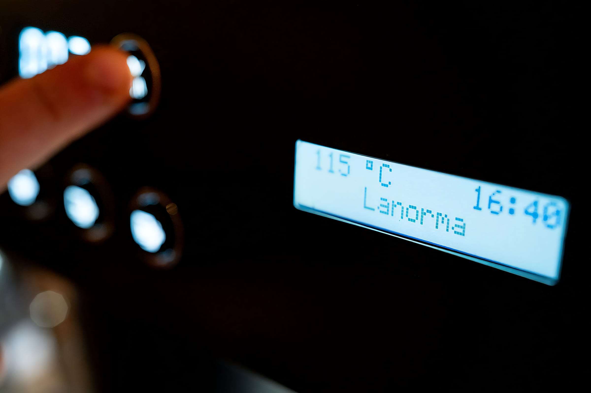

Propuesta en 5 diapositivas
El diagnóstico de la web actual, la prueba técnica, la propuesta y el roadmap. Rehecha entera con la identidad del sitio: sin cajas con borde, números en monoespaciada y mucho aire.
HTML a pantalla completa + .pptx editable